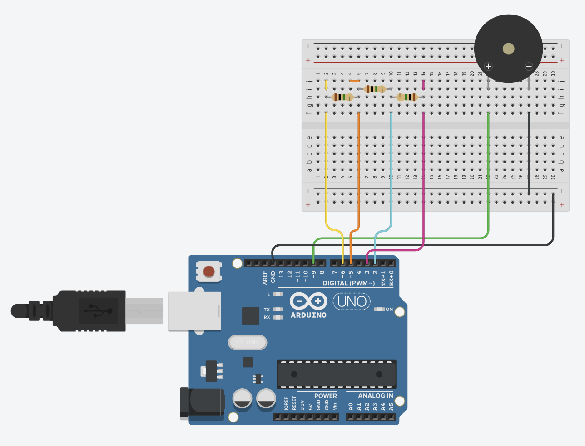
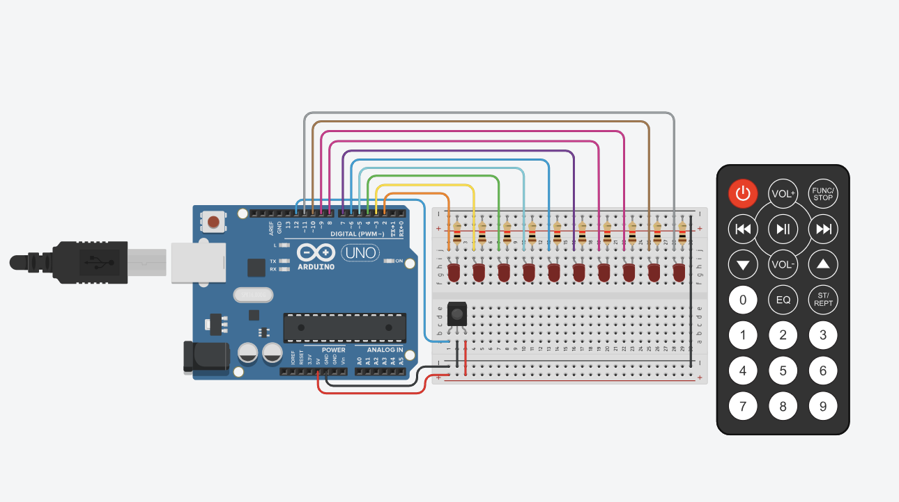

Workshop Activity: Physical Computing
Capacitive Touch & IR Remote LEDs
Theory
- GND = Ground → start with this, fundamental and always required
- INPUT (sensors) → PROCESS/code (interpretation / translation) → OUTPUT (control)
read= receiving input |write= sending output- Sensors require Voltage (+), Ground (-)
- C++ uses Ohm's Law: I = V/R
Capacitive Touch Music Machine
Diagram
Photo of My Uno Board

Code
#include <CapacitiveSensor.h>
#define PIEZO_PIN 9
#define LED_PIN 4
#define csSamples 5
CapacitiveSensor cs_2_3 = CapacitiveSensor(2, 3);
CapacitiveSensor cs_2_5 = CapacitiveSensor(2, 5);
CapacitiveSensor cs_2_6 = CapacitiveSensor(2, 6);
int sen1Val, sen2Val, sen3Val = 0;
void setup() {
Serial.begin(9600);
pinMode(PIEZO_PIN, OUTPUT);
pinMode(LED_PIN, OUTPUT);
Serial.println("Setup complete. Ready for touch!");
}
void loop() {
sen1Val = cs_2_3.capacitiveSensor(csSamples);
sen2Val = cs_2_5.capacitiveSensor(csSamples);
sen3Val = cs_2_6.capacitiveSensor(csSamples);
if (sen1Val > 50) tone(PIEZO_PIN, 262, 200);
else if (sen2Val > 50) tone(PIEZO_PIN, 294, 200);
else if (sen3Val > 50) tone(PIEZO_PIN, 330, 200);
else noTone(PIEZO_PIN);
delay(100);
}IR Remote Controlled LEDs
Diagram
Photo of My Uno Board

Code
#include <IRremote.h>
int voltage[12];
IRrecv irrecv(12);
decode_results results;
unsigned long key_value = 0;
void setup() {
Serial.begin(9600);
SetUpPins();
irrecv.enableIRIn();
irrecv.blink13(true);
}
void loop() {
TranslateIR();
}
void ToggleLED(int pin) {
if (voltage[pin]) {
digitalWrite(pin, LOW);
voltage[pin] = 0;
} else {
digitalWrite(pin, HIGH);
voltage[pin] = 1;
}
}
void SetUpPins() {
for (int i = 2; i <= 11; i++) {
pinMode(i, OUTPUT);
digitalWrite(i, LOW);
}
pinMode(10, OUTPUT);
pinMode(11, OUTPUT);
}
void TranslateIR() {
if (irrecv.decode(&results)) {
if (results.value == 0XFFFFFFFF) results.value = key_value;
switch(results.value) {
case 0xFD30CF: ToggleLED(2); break;
case 0xFD08F7: ToggleLED(3); break;
case 0xFD8877: ToggleLED(4); break;
case 0xFD48B7: ToggleLED(5); break;
case 0xFD28D7: ToggleLED(6); break;
case 0xFDA857: ToggleLED(7); break;
case 0xFD6897: ToggleLED(8); break;
case 0xFD18E7: ToggleLED(9); break;
case 0xFD9867: ToggleLED(10); break;
case 0xFD58A7: ToggleLED(11); break;
}
key_value = results.value;
irrecv.resume();
}
}WHAT I LEARNT
When connecting wires on the board, it is important to connect to the right row. We don’t need to specifically follow the columns accurately but the row should be connected with wires accurately.
Must download the libraries on Arduino Sketch to run the code.
When pasting the code from the instruction, be careful not to have two setup() and loop() functions. (Delete the default ones)